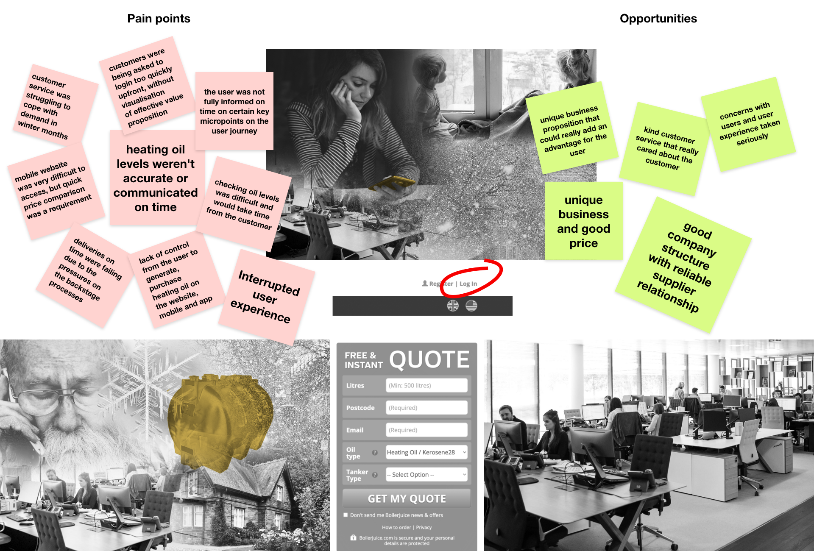
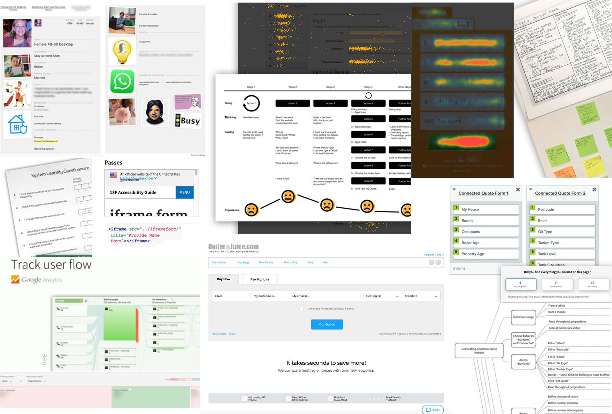
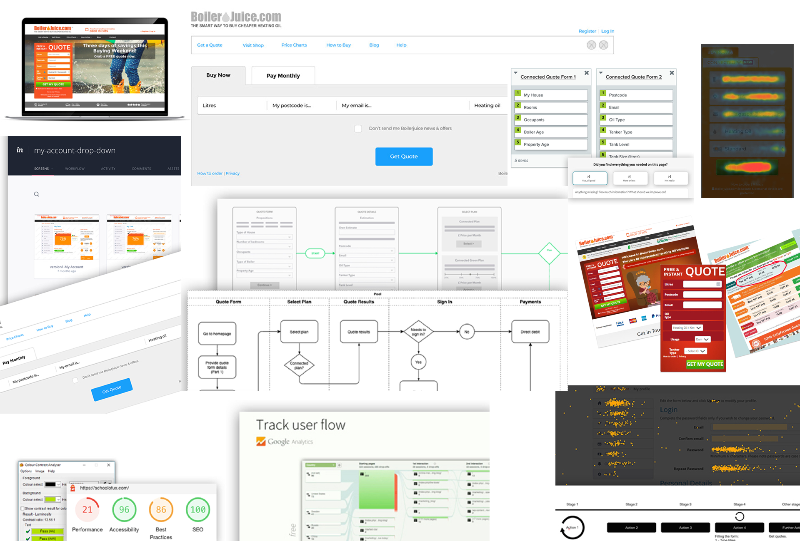

This is a ready-to-print page
BoilerJuice
Service design and UI for the commodity market
BoilerJuice is the UK's leading heating oil supplier, providing a simple, efficient, and cost-effective way for customers to order heating oil. Established in 2004, BoilerJuice revolutionised the industry by offering a price comparison service that allows users to find the best local deals on heating oil.
The challenge
Due to their growing popularity and the seasonal surge in orders during winter, BoilerJuice faced challenges in maintaining customer satisfaction. A key issue was the lack of a fast, real-time heating oil level monitoring system. Customers often discovered their tank levels were already critically low by the time they placed an order, leaving them without heating, particularly in remote locations such as countryside cottages. On top of that, the ordering process was cumbersome.
As demand grew, the traditional customer journey (relying on phone orders and a basic online form) became outdated and inefficient.

My role
Over 18 months, I held 80% UX ownership in a 300 person cross-functional team. We used Confluence, Google Analytics, and optimised the web experience across Chrome, IE, Firefox, Opera, and Safari. The team included product owners, engineers, customer service specialists, heating oil partners, marketing professionals, and developers.
Designed and launched a new service that makes buying heating oil as effortless as being connected to a mains supply. This included creating new user journeys, redesigning legacy pages, and building fresh content for the Connected Service across the company’s public website (www.boilerjuice.com) and mobile app.
Although I inherited parts of the original app design from another designer, the current structure and layouts, despite updates to colour and typography, are largely based on my work.
Process & Approach
User Research (UR)
Discovery through defining core problem statements, with ongoing testing and iteration driven by live performance and user feedback.
I carried out accessibility audits, user interviews, and quantitative research using the System Usability Scale (SUS). I analysed user behaviour and improved the information architecture through card sorting exercises.
Conducted user research in collaboration with the Product Manager. Delivered user research insights, ecosystem maps, blueprint canvases, lean canvases, user flows with UX diaries, and information architecture maps.

User Interface design (UI)
Mapped user flows in Draw.io and Sketch, covering both happy and unhappy paths to identify issues early. Created low to mid-fidelity wireframes in Axure, Sketch, Figma, and Balsamiq to align stakeholders on functionality and flow.

Redesigned the quote form to deliver faster, clearer heating oil quotes and support a subscription service. Improved the end-to-end purchasing experience by redesigning key checkout pages to reduce friction, increase trust, and create a more transparent, mobile friendly journey. Also introduced an improved search function for easier access to key documents and data.
Design handover
I partnered closely with developers to ensure designs were delivered in line with approved layouts, supported by clear guidelines, assets, and documentation. Through ongoing check-ins and QA sessions, I maintained quality and ensured the final product consistently reflected the intended experience.
Drove alignment between design and business goals by demonstrating value through user research and testing, engaging stakeholders early to validate decisions, set priorities, and support delivery within an agile framework.
Outcome
- Increased trust in the BoilerJuice website and reduced journey abandonment. Customers were able to order heating oil with little to no support. Customer service calls shifted towards follow-ups rather than winter emergencies.
- It became easier, faster, and more trustworthy to order heating oil. People felt reassured by clearer delivery expectations and real-time updates.
- Meaningful alerts and subscription options increased repeat usage and loyalty.
- Earlier reordering and clearer service transparency improved operational resilience during winter peak demand.